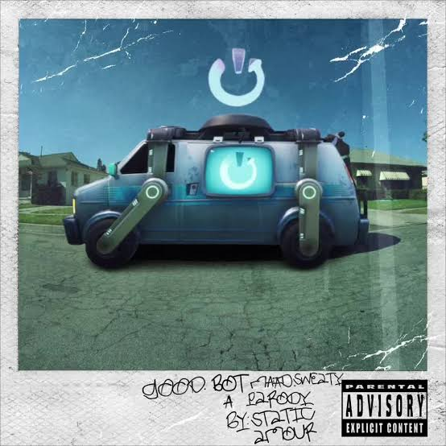
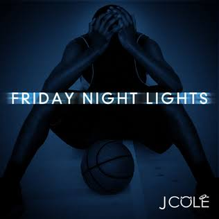
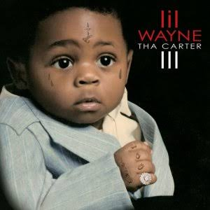
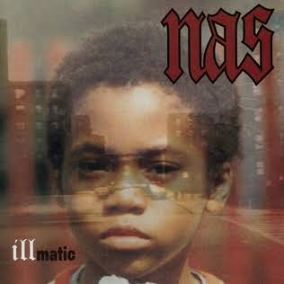

Good Kid M.A.A.D City
Kendrick Lamar, 2012. A concept album exploring themes of growing up in Compton. You will feel like you're right there with Kendrick in experiencing his life.
Vinyl records and my Hip-Hop collection.

Four albums every hip hop collector should listen to. I chose these four albums as they all offer different experiences and styles all from Hip-Hops best eras. There are Hundreds of Albums and Tapes i could have included.

Kendrick Lamar, 2012. A concept album exploring themes of growing up in Compton. You will feel like you're right there with Kendrick in experiencing his life.

J. Cole, 2010. Each track gives you a different experience. An extremely well-rounded mixtape i highly recommend to anyone interested in hip hop or new to the genre

Lil Wayne, 2008. Full of hits and memorable moments. If you want a taste of classic hip hop mainstream hits, this is the album for you.

Nas, 1994. Ten tracks, no filler. Possibly the greatest hip hop album ever made. Nas wrote the majority of these songs at the age of 18. Some of the best production youll find, by DJ Premier.